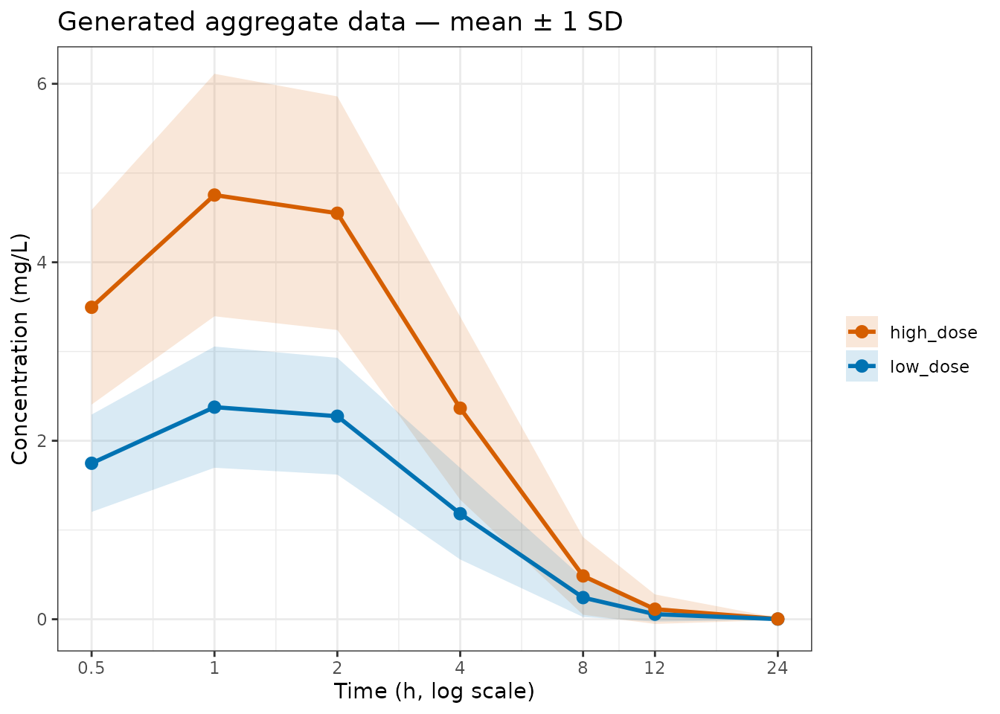
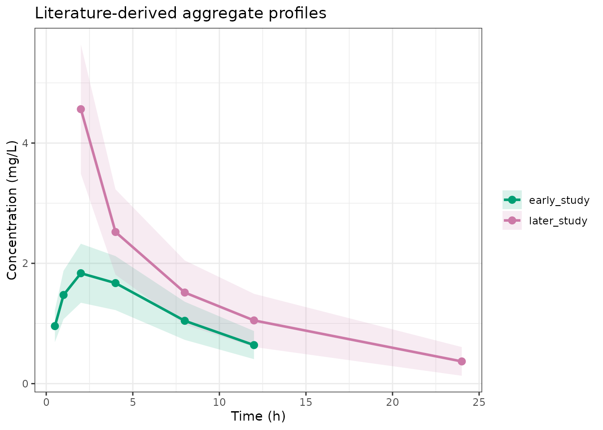
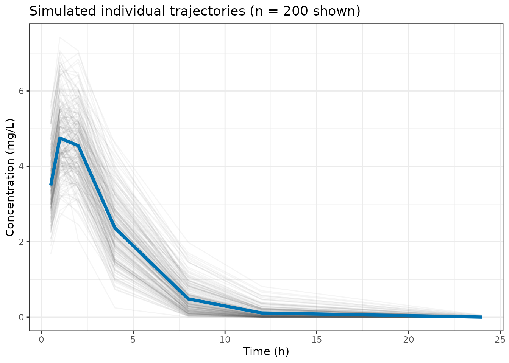

When would you use datagen?
Two common situations call for generating aggregate data programmatically:
Simulation studies. You want to check that an
estimator recovers the true parameters. Define a data-generating model
with known parameters, call datagen() to obtain E and V,
fit your analysis model, and compare the estimates to the truth.
Literature-based modelling. Each published study was
analysed with its own structural PK model (possibly a different number
of compartments, a different parameterisation, or only a subset of the
IIV terms). datagen() lets each study carry its own model
so that the simulated aggregate data reflects the original authors’
model, not a single shared structure.
In both cases the output is a named list of
(E, V, n, times, ev) objects that plug directly into
admControl(studies = ...).
Simulation study: same model across studies
Here we use a one-compartment oral model to generate two synthetic
study datasets — a low-dose and a high-dose arm — then verify that
adfo recovers the true structural parameters.
Data-generating model
library(admixr2)
library(rxode2)
library(nlmixr2)
library(ggplot2)
true_model <- function() {
ini({
tcl <- log(5) ; label("Log clearance (L/h)")
tv <- log(10) ; label("Log volume (L)")
tka <- log(1) ; label("Log absorption rate (1/h)")
prop.sd <- c(0, 0.2) ; label("Proportional error SD")
eta.cl ~ 0.09
eta.v ~ 0.04
eta.ka ~ 0.04
})
model({
cl <- exp(tcl + eta.cl)
v <- exp(tv + eta.v)
ka <- exp(tka + eta.ka)
d/dt(depot) <- -ka * depot
d/dt(central) <- ka * depot - (cl/v) * central
cp <- central / v
cp ~ prop(prop.sd)
})
}True parameter values: CL = 5 L/h, V = 10 L, ka = 1 h⁻¹; IIV of 0.3 (SD on log scale) for CL and 0.2 for V and ka; proportional residual error SD = 0.2.
Generating the data
Pass the model as the top-level default so all studies inherit it.
Each study spec needs only times, ev, and
n:
times <- c(0.5, 1, 2, 4, 8, 12, 24)
study_data <- datagen(
studies = list(
low_dose = list(times = times, ev = rxode2::et(amt = 50), n = 250L),
high_dose = list(times = times, ev = rxode2::et(amt = 100), n = 250L)
),
model = true_model,
control = datagenControl(n_sim = 10000L, seed = 1L)
)
# Each study returns E, V, n, times, ev
names(study_data$low_dose)
#> [1] "E" "V" "n" "times" "ev"
round(study_data$low_dose$E, 2) # population mean at each time
#> 0.5 1 2 4 8 12 24
#> 1.75 2.38 2.27 1.18 0.24 0.06 0.00The covariance matrix V captures both IIV-driven
between-time correlation and the residual error contribution on the
diagonal:
round(study_data$low_dose$V, 3)
#> 0.5 1 2 4 8 12 24
#> 0.5 0.291 0.187 0.106 -0.005 -0.018 -0.007 0.000
#> 1 0.187 0.452 0.171 0.051 0.001 -0.001 0.000
#> 2 0.106 0.171 0.420 0.161 0.051 0.015 0.001
#> 4 -0.005 0.051 0.161 0.255 0.084 0.028 0.001
#> 8 -0.018 0.001 0.051 0.084 0.046 0.016 0.001
#> 12 -0.007 -0.001 0.015 0.028 0.016 0.007 0.000
#> 24 0.000 0.000 0.001 0.001 0.001 0.000 0.000Inspecting the generated profiles
df_gen <- do.call(rbind, lapply(names(study_data), function(nm) {
s <- study_data[[nm]]
sd <- sqrt(diag(s$V))
data.frame(study = nm, time = s$times,
mean = s$E, lo = s$E - sd, hi = s$E + sd)
}))
ggplot(df_gen, aes(x = time, y = mean, colour = study, fill = study)) +
geom_ribbon(aes(ymin = lo, ymax = hi), alpha = 0.15, colour = NA) +
geom_line(linewidth = 1) +
geom_point(size = 2.5) +
scale_x_log10(breaks = times, labels = times) +
scale_colour_manual(values = c(low_dose = "#0072B2", high_dose = "#D55E00")) +
scale_fill_manual( values = c(low_dose = "#0072B2", high_dose = "#D55E00")) +
labs(title = "Generated aggregate data — mean ± 1 SD",
x = "Time (h, log scale)", y = "Concentration (mg/L)",
colour = NULL, fill = NULL) +
theme_bw()
Generated population mean ± 1 SD for both dose levels.
The ribbon reflects the square root of the diagonal of V: IIV spread plus residual error. Off-diagonal entries (the within-subject correlation structure) are not shown but are passed to the estimator and used in the likelihood.
Parameter recovery
The generated data plug directly into
admControl(studies = ...). The analysis model is the same
structural model — this lets us verify estimator consistency:
analysis_model <- function() {
ini({
tcl <- log(4) ; label("Log clearance (L/h)")
tv <- log(12) ; label("Log volume (L)")
tka <- log(1.5); label("Log absorption rate (1/h)")
prop.sd <- c(0, 0.3); label("Proportional error SD")
eta.cl ~ 0.12
eta.v ~ 0.05
eta.ka ~ 0.05
})
model({
cl <- exp(tcl + eta.cl)
v <- exp(tv + eta.v)
ka <- exp(tka + eta.ka)
d/dt(depot) <- -ka * depot
d/dt(central) <- ka * depot - (cl/v) * central
cp <- central / v
cp ~ prop(prop.sd)
})
}Starting values are deliberately offset from the truth (CL start = 4 vs true 5, V start = 12 vs true 10) to demonstrate that the estimator finds them regardless.
fit_sim <- nlmixr2(
analysis_model, admData(), est = "admc",
control = admControl(
studies = study_data,
maxeval = 300L,
covMethod = "r"
)
)
#> [====|====|====|====|====|====|====|====|====|====] 0:00:00
#> [====|====|====|====|====|====|====|====|====|====] 0:00:00
#> [====|====|====|====|====|====|====|====|====|====] 0:00:00
#> [====|====|====|====|====|====|====|====|====|====] 0:00:00
#> [====|====|====|====|====|====|====|====|====|====] 0:00:00
#> [====|====|====|====|====|====|====|====|====|====] 0:00:00
#>
#> [====|====|====|====|====|====|====|====|====|====] 0:00:00
#>
#> [====|====|====|====|====|====|====|====|====|====] 0:00:00
#> [====|====|====|====|====|====|====|====|====|====] 0:00:00
#> [====|====|====|====|====|====|====|====|====|====] 0:00:00
#> [====|====|====|====|====|====|====|====|====|====] 0:00:00
#> [====|====|====|====|====|====|====|====|====|====] 0:00:00
#> [====|====|====|====|====|====|====|====|====|====] 0:00:02
#>
#> [====|====|====|====|====|====|====|====|====|====] 0:00:02
print(fit_sim)
#> ── nlmixr² admc ──
#>
#> OBJF AIC BIC Log-likelihood
#> admc -7889.378 -7875.378 -7832.254 3944.689
#>
#> ── Time (sec fit_sim$time): ──
#>
#> optimize covariance elapsed
#> 1 64.953 7.493 72.446
#>
#> ── Population Parameters (fit_sim$parFixed or fit_sim$parFixedDf): ──
#>
#> Parameter Est. SE %RSE
#> tcl Log clearance (L/h) 1.608 0.009336 0.5806
#> tv Log volume (L) 2.303 0.01276 0.5542
#> tka Log absorption rate (1/h) 0.001775 0.01798 1013
#> prop.sd Proportional error SD 0.1999
#> Back-transformed(95%CI) BSV(CV%) Shrink(SD)%
#> tcl 4.994 (4.903, 5.086) 30.4
#> tv 10 (9.754, 10.25) 19.6
#> tka 1.002 (0.9671, 1.038) 20.9
#> prop.sd 0.1999
#>
#> Covariance Type (fit_sim$covMethod): r
#> No correlations in between subject variability (BSV) matrix
#> Full BSV covariance (fit_sim$omega)
#> or correlation (fit_sim$omegaR; diagonals=SDs)
#> Distribution stats (mean/skewness/kurtosis/p-value) available in $shrink
#> Censoring (fit_sim$censInformation): No censoring
#> Minimization message (fit_sim$message):
#> NLOPT_XTOL_REACHED: Optimization stopped because xtol_rel or xtol_abs (above) was reached.Structural parameter estimates and the truth:
Literature workflow: per-study models
When digitising data from publications, each study comes with its own
model. A 2016 paper may have used a one-compartment model; a 2022
follow-up may have used two compartments. datagen() accepts
a model element inside each study spec that overrides the
top-level default:
# One-compartment oral model (as published in a simpler earlier study)
model_1cmt <- function() {
ini({
tcl <- log(5)
tv <- log(40) # apparent volume, peripheral compartment lumped in
tka <- log(1)
prop.sd <- c(0, 0.25)
eta.cl ~ 0.04
eta.v ~ 0.01
eta.ka ~ 0.01
})
model({
cl <- exp(tcl + eta.cl)
v <- exp(tv + eta.v)
ka <- exp(tka + eta.ka)
d/dt(depot) <- -ka * depot
d/dt(central) <- ka * depot - (cl/v) * central
cp <- central / v
cp ~ prop(prop.sd)
})
}
# Two-compartment oral model (as published in a more detailed later study)
model_2cmt <- function() {
ini({
tcl <- log(5)
tv1 <- log(10)
tv2 <- log(30)
tq <- log(10)
tka <- log(1)
prop.sd <- c(0, 0.2)
eta.cl ~ 0.09
eta.v1 ~ 0.04
})
model({
cl <- exp(tcl + eta.cl)
v1 <- exp(tv1 + eta.v1)
v2 <- exp(tv2)
q <- exp(tq)
ka <- exp(tka)
d/dt(depot) <- -ka * depot
d/dt(central) <- ka * depot - (cl/v1 + q/v1) * central + (q/v2) * peripheral
d/dt(peripheral) <- (q/v1) * central - (q/v2) * peripheral
cp <- central / v1
cp ~ prop(prop.sd)
})
}Both studies share the same CL (5 L/h) but differ in how they describe distribution: the earlier study lumped peripheral distribution into a single larger apparent volume (V = 15 L), while the later study resolved the two compartments (V₁ = 10 L, V₂ = 30 L, Q = 10 L/h).
lit_data <- datagen(
studies = list(
early_study = list(
model = model_1cmt,
times = c(0.5, 1, 2, 4, 8, 12),
ev = rxode2::et(amt = 100),
n = 120L
),
later_study = list(
model = model_2cmt,
times = c(2, 4, 8, 12, 24),
ev = rxode2::et(amt = 200),
n = 180L
)
),
control = datagenControl(n_sim = 10000L, seed = 2L)
)The two studies share the same drug (same CL) but have different E profiles because of the different dosing and distributional assumptions:
df_lit <- do.call(rbind, lapply(names(lit_data), function(nm) {
s <- lit_data[[nm]]
sd <- sqrt(diag(s$V))
data.frame(study = nm, time = s$times,
mean = s$E, lo = s$E - sd, hi = s$E + sd)
}))
ggplot(df_lit, aes(x = time, y = mean, colour = study, fill = study)) +
geom_ribbon(aes(ymin = lo, ymax = hi), alpha = 0.15, colour = NA) +
geom_line(linewidth = 1) +
geom_point(size = 2.5) +
scale_colour_manual(values = c(early_study = "#009E73", later_study = "#CC79A7")) +
scale_fill_manual( values = c(early_study = "#009E73", later_study = "#CC79A7")) +
labs(title = "Literature-derived aggregate profiles",
x = "Time (h)", y = "Concentration (mg/L)",
colour = NULL, fill = NULL) +
theme_bw()
Simulated aggregate profiles from two publications with different structural models.
Fitting an analysis model to literature data
The data-generating models encode each publication’s assumptions; the analysis model represents your unified structural hypothesis. Here we fit the two-compartment oral model to both studies jointly:
lit_analysis <- function() {
ini({
tcl <- log(5)
tv1 <- log(10)
tv2 <- log(30)
tq <- log(10)
tka <- log(1)
prop.sd <- c(0, 0.25)
eta.cl ~ 0.09
eta.v1 ~ 0.04
})
model({
cl <- exp(tcl + eta.cl)
v1 <- exp(tv1 + eta.v1)
v2 <- exp(tv2)
q <- exp(tq)
ka <- exp(tka)
d/dt(depot) <- -ka * depot
d/dt(central) <- ka * depot - (cl/v1 + q/v1) * central + (q/v2) * peripheral
d/dt(peripheral) <- (q/v1) * central - (q/v2) * peripheral
cp <- central / v1
cp ~ prop(prop.sd)
})
}
fit_lit <- nlmixr2(
lit_analysis, admData(), est = "admc",
control = admControl(
studies = lit_data,
n_sim = 5000L,
cov_n_sim = 10000L,
seed = 3L
)
)Because the two studies used genuinely different structural models, the analysis model will find parameter values that minimise the joint discrepancy between its predictions and both studies’ aggregate data — a weighted compromise across the two parameterisations. This is expected behaviour: aggregate-data modelling accepts that each study was published under a different structural assumption and seeks a unified set of parameters that is consistent with all of them.
Examining individual simulated samples
Set return_samples = TRUE in
datagenControl() to include the raw
n_sim × n_times prediction matrix in each study’s output.
This is useful for inspecting the shape of the simulated distribution or
for constructing custom summaries:
study_with_samples <- datagen(
studies = list(
single_study = list(times = times, ev = rxode2::et(amt = 100), n = 250L)
),
model = true_model,
control = datagenControl(n_sim = 2000L, seed = 4L, return_samples = TRUE)
)
cp_mat <- study_with_samples$single_study$samples # 2000 x 7
mu <- study_with_samples$single_study$E
df_samp <- data.frame(
time = rep(times, each = 200),
conc = as.vector(cp_mat[1:200, ]),
id = rep(seq_len(200), times = length(times))
)
ggplot(df_samp, aes(x = time, y = conc, group = id)) +
geom_line(alpha = 0.06, colour = "grey30") +
geom_line(data = data.frame(time = times, conc = mu),
aes(group = NULL), colour = "#0072B2", linewidth = 1.5) +
labs(title = "Simulated individual trajectories (n = 200 shown)",
x = "Time (h)", y = "Concentration (mg/L)") +
theme_bw()
First 200 individual simulated trajectories (grey) with the population mean (blue).
The blue line is the population mean E; the grey spaghetti shows the
IIV spread. Note that samples contains concentrations
before residual error is added; the diagonal of V
additionally carries the residual error variance.